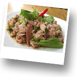

Кухня Тайланда
История и культура тайской кухни
Тайская кухня, пожалуй, самая удивительная кухня мира. Самая богатая по своим вкусовым ощущениям. Тайская кухня уникальна по количеству специй и различных ингридиентов, придающих особый вкус каждом блюду. Эта кухня является одной из самых известных и востребованных кухонь в мире, которая сложилась под влиянием соседних стран. При этом кухни различных регионов Тайланда отличаются. Первоначально в пищу употреблялись в основном рыба, морепродукты и водные растения. Китайская и японская кухни внесли значительные изменения в культуру питания Таиланда, с XVII века большое влияние оказала европейская кухня. В частности, перец чили был ввезён в Таиланд португальскими миссионерами. Подобно другим азиатским кухням, основным компонентом является рис. Слово «еда» переводится с тайского языка буквально как «есть рис», независимо от поданного блюда. Особо популярен довольно дорогой сорт риса жасминовый рис родом из Исана. В северной и восточной частях Таиланда популярен клейкий рис, который содержит необычный уровень крахмала. Клейкий рис приготовляется на пару в контейнере из бамбука, а не в воде, как обычный рис. Этот сорт риса является ежедневным продуктом питания в Лаосе и Северной и Северо-восточной тайской кухне, на которую большое влияние имеет культура Лаоса. В основе тайской кухни - умение сочетать пять вкусов - сладкий, кислый, соленый, горький и острый. Часто трудно определиться, каково же блюдо на вкус - кислое или сладкое, а может быть сладкое и соленое. При этом каждое блюдо уникально и зависит не только от продуктов, но и от стиля повара, который по своему усмотрению использует различные специи и их сочетания. В Таиланде нет строго определенных правил приготовлению пищи, есть только общие черты. Специи, время приготовление, способ подачи и сервировка блюд определяется лично поваром. Но есть три основных компонента тайской кухни: рис, соус чили и кокосовое молоко. Эти продукты встречаются буквально в каждом блюде. Приём пищи первоначально осуществлялся пальцами, без помощи столовых приборов, что распространено в некоторых регионах и по сей день. В начале XIX века после поездок в Европу король Монгкут ввёл обычай есть при помощи ложки и вилки. Вилка используется при этом лишь для накладывания пищи в ложку, с помощью которой собственно и едят. Подносить вилку с едой (исключением являются небольшие вилочки для фруктов) ко рту считается неприличным. Палочки для еды не являются типичными для тайской кухни и подаются только в китайских ресторанах или к блюдам из лапши. Супы с лапшой едят при помощи ложки в левой руке для бульона и палочками в правой руке для лапши, мяса, рыбы и овощей. В Тайланде очень развит культ еды. Едеят здесь буквально на каждом углу. Не стоит сильно опасаться малоприметных закусочных. Иногда именно в них Вы сможете познать истинные «тайны» кулинарии Тайланда.
Тайская кухня –
самая острая кухня в мире
Тайская кухня - одна из самых острых в мире. Однако, в ресторанах и кафе на популярных курортах уже давно научились готовить тайскую еду для европейцев - намного менее острую, чем в традиционном варианте. Если у вас нет уверенности, в вы сможете осилить острое блюдо - попросите не острый вариант: no spicy - не остро или no chili - без чили. Можно также опробовать промежуточный вариант - немного остро: little spicy - немного остро. Есть также фраза в тайском языке для тех, кто вообще не хочет видеть чили в своей тарелке - ни грамма: «май пхет лёй» - не остро совсем. Так вы подчеркнете, что острого вам не нужно вообще, так как порою тайцы воспринимают формулировку «не остро», как «не больше одного чили». Только при этом помните, что совсем без чили часть тайских блюд теряет свой колорит. Eсли же вы желаете насладиться истинным вкусом тайских блюд, заказывайте, как есть. Только не забывайте основательно «закусывать» все паровым жасминовым рисом, который тут подадут вам по первому требованию (если он не включен уже в «состав» блюда) – он нейтрализует жжение куда быстрее воды, которая, как раз наоборот, может только усугубить ситуацию.
Основные продукты, специи и блюда Тайланда
Продукты:
Рис - наиболее распространены жасминовый в центральном и южном регионах Таиланда и клейкий рис на севере, северо-востоке. Помимо них существует огромное количество сортов риса
Лапша
- Куай тиеу, рисовая лапша — употребляется в супах или в жареном виде (Phat Thai)
- Бами — лапша желтоватого цвета, из пшеничной муки, иногда с добавлением яйца
- Кханом Тьин — рисовая лапша, типичная для блюд Южного Таиланда, чаще всего к ней подаётся соус-карри или соус из трав
- Вун Сен — прозрачная лапша из муки бобов мунг; используется при приготовлении супов или как салат Йам Вун Сен
Тайские баклажаны
Ча-ом — побеги акации вида Acacia pennata, употребляются в супах, карри и омлетах
Специи Тайланда:
Различные сорта свежих и высушенных перцев чили
Имбирь
Корень галанги
Китайский имбирь
Лимонная трава (Lemongrass)
Чеснок
Кориандр
Укроп — прежде всего в блюдах Северо-восточной кухни
Базилик (horapa) - похожий на европейский
Базилик «сладкий» ( Ocimum basilicum)
Базилик «лимонный» (Ocimum citriodorum)
Базилик «индийский» ( Ocimum tenuiflorum)
Листья лайма — придают блюду цитрусовый вкус, но не делают его кислым
Рыбный соус — состоит из анчоусов, воды и соли; является основой большинства блюд
Тамаринд
Основные блюда тайской кухни:
Тьок — рисовая каша
Кхау Том — рисовый суп с кусочками свинины, курицы или креветками
Том ям — кисло-острый суп на основе куриного бульона с креветками, курицей, рыбой или другими морепродуктами
Том Кха Кай — острый суп на кокосовом молоке с курицей, грибами, помидорами, галанганом или имбирем, лемонграссом
Том Кха Кунг — острый суп на кокосовом молоке с креветками, грибами, помидорами, галанганом или имбирем, лемонграссом
Кхау Пхат — жареный рис с курицей, кусочками говядины, свинины, креветками, крабами, кокосом, ананасом
Пхат Тхай — жареная рисовая лапша с рыбным соусом, сахаром, соком лайма, тамариндом, измельчённым арахисом, яйцом. Подают вместе с курицей, морепродуктами, тофу
Рат На — широкая рисовая лапша в подливе со свининой, говядиной, курицей, морепродуктами
Кхау Пхат Нэм — жареный рис с ферментированной колбасой
Пхат Си Иу — жареная лапша с густым соевым соусом see ew dum и рыбным соусом, со свининой или курицей
Пхат Кхи Мау — жареная лапша с тайским базиликом
Кхау Кхлук Капи — жареный рис с пастой из креветок, со свининой и овощами
Кханом Тьин Нам Йа — круглая рисовая лапша с различными карри и свежими овощами
Кхау Сои — хрустящая жареная лапша со сладким куриным карри
Кхау Пхат — жареный рис с курицей
Кай Пхат Ка-пхрау — кусочки курицы с чесноком, чили и базиликом
Кай Пхат Мет Ма-муанг Химпхан — кусочки курицы с орехами кешью и чили
Рекомендуем попробавать:
Том Ян Кунг
Самый знаменитый тайский суп со множеством специй и креветок. Попробовав хотя бы один раз хорошо приготовленный Том Ян Кунг с корнем травы «Lemongrass» - его хочется снова и снова. Суп очень острый, но возможно попросить, чтобы Вам сделали его менее острым или восе не острым. В пищу употребляется только лишь бульон, креветки и грибы, остальные ингридиенты есть не нужно.
Сом Там
Самый знаменитый тайский салат. Гтовится из свежих ингридиентов в ступке из пальмового дерева. Основные ингридиенты: зеленая папайя, морковь, помидоры. В салат добавляется жареный арахис, острый соус, лимонный сок и несколько стручков горького перца. Сом Там острое блюдо, но Вы можете поросить, чтобы его приготовили менее острым или не острым вовсе.
Кау Пат
Кау Пат Гай (курица), Кау Пат Кун (креветки), Кау Пат Пу (крабы), Кау Пат Му (свинина), Ныа (говядина) – жареный рис с ингридиентами на Ваш выбор. Блюдо не острое.
Пад Тай
Очень популярное блюдо, в состав которого входят пророщеные бобы, зелень, специи, креветки, сушеные креветки, яйцо, рисовая лапша и арахис. Блюдо не острое, но к нему подается множество приправ и специ.
Ям Талэй
Острый салат с морепродуктами и прозрачной рисовой лапшой.
Пла Тод
Рыба, жаренная в масле. Это одно из любимых лакомств местных жителей. Обычно в это блюдо используют для приготовления рыбу «Сибасс». Вы можете просить, чтобы Вам приготовили эту рыбу на пару. Также можно поросить, чтобы добавили к рыбе соевый соус – это получится блюдо уже более похожее по своим вкусовым ощущуниям на китайскую кухню. Блюдо не острое.
Том Ка Гай
Традиционный тайский суп с куриным филе, приготовленный на кокосовом молоке. Обычно этот суп совсем не острый.

Лап Му
Мелко рубленая свинина, обжаренная с зеленьюи специями. Блюдо острое. Вы можете поросить, чтобы его приготовили менее острым или не острым вовсе.